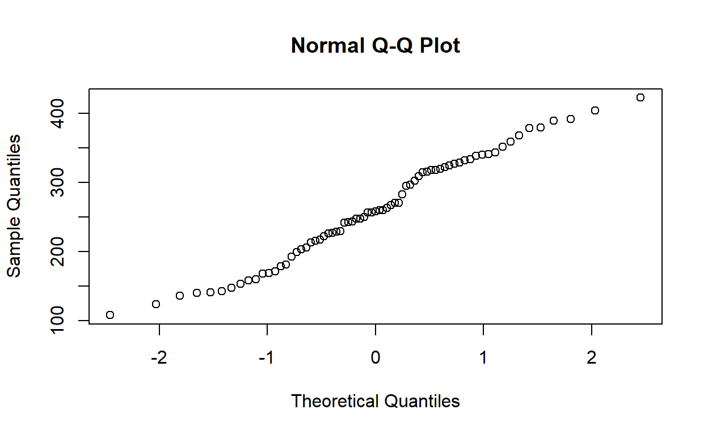
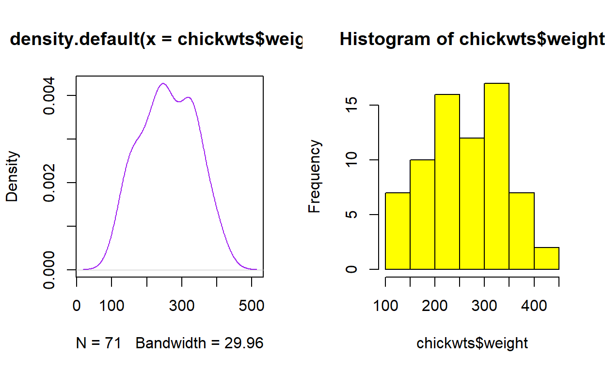
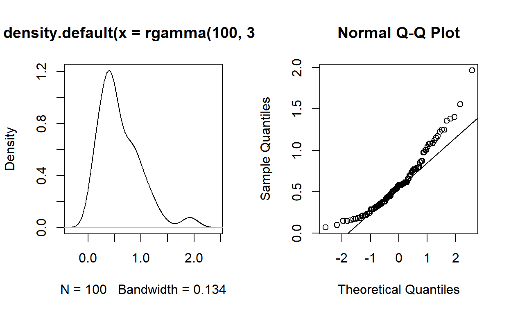
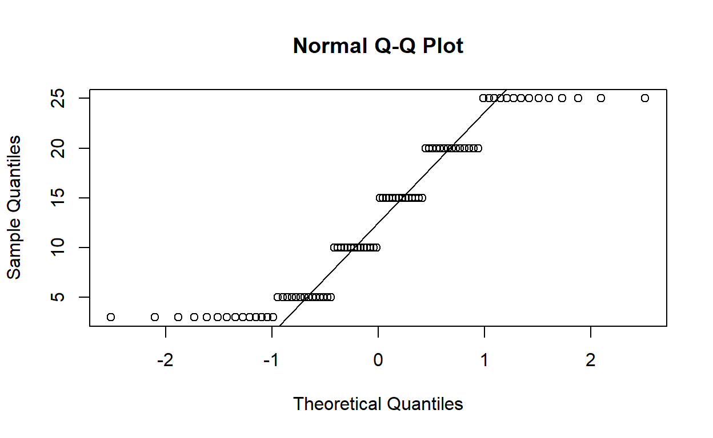
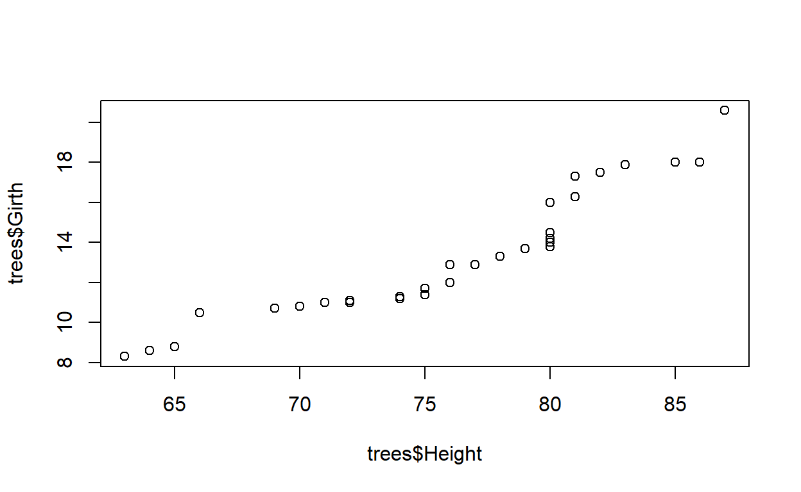
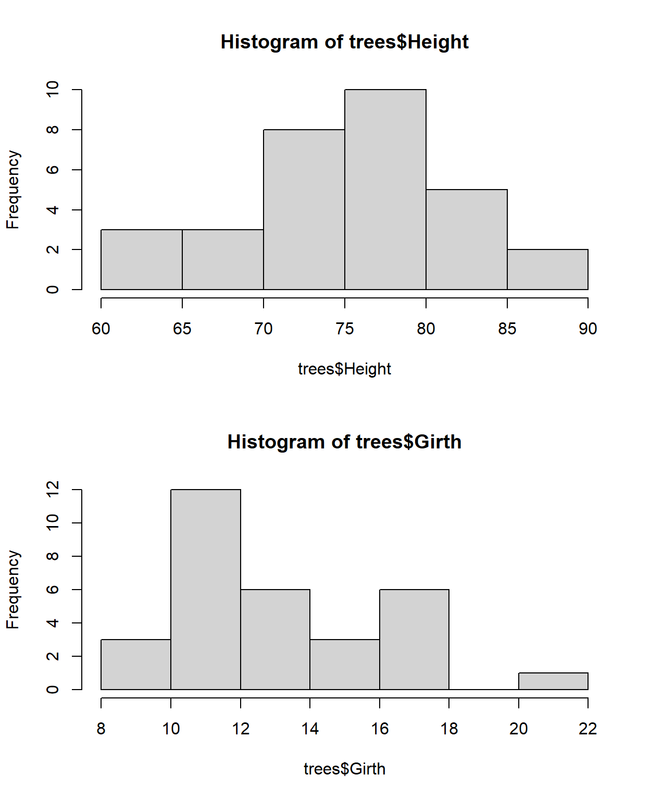
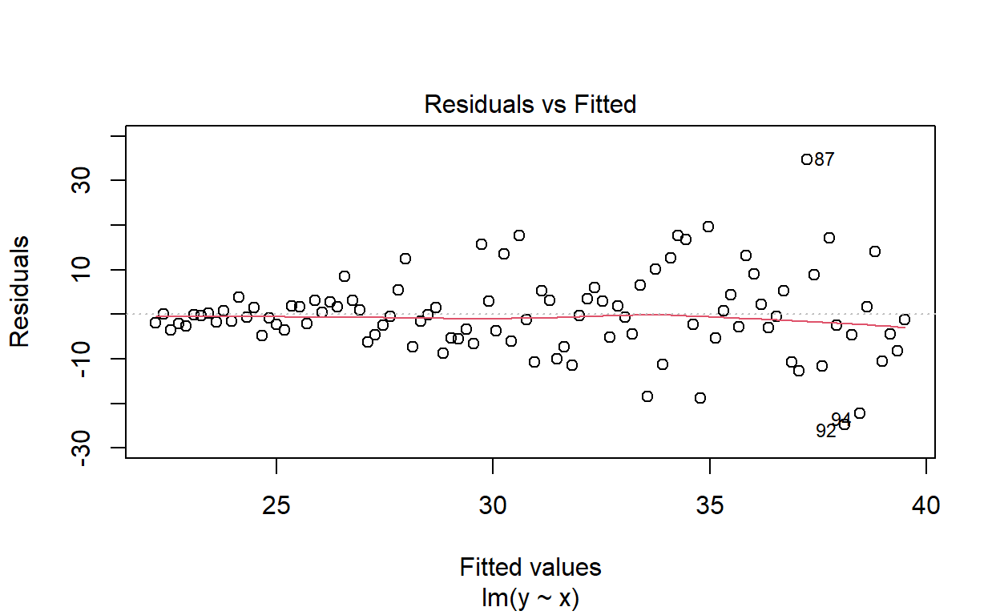
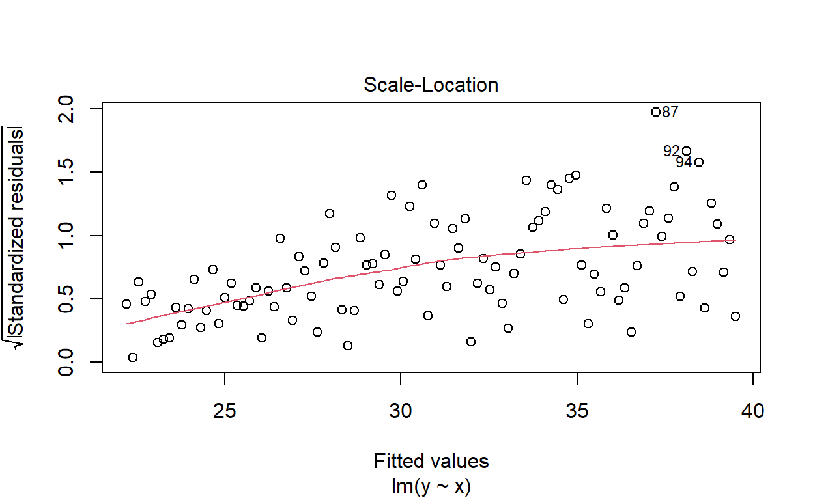

Checking that our data meets the assumption of linear models is pretty important. Else, we might make the wrong conclusion! Unfortunately, these checks may be ignored or forgotten about but that’s no excuse.
Here are some things to look out for:
Normality can be checked using Quantile-Quantile plots.
Quantile-Quantile (Q-Q) plots are useful alternatives to visualising distributions to density plots or histograms. They are easier to assess distribution and normality with than histograms.
We can see whether a single variable has a normal distribution - specifically that the distribution is symmetrical or not skewed - using the function qqnorm(data$variable).
qqnorm(chickwts$weight) # the weight of chicks fed different diets (built in dataset)
Here, the quantiles of our observations are plotted against the theoretical quantiles if our observations followed a normal distribution.
Question
We can add a reference line to the above to help us evaluate how linear the Q-Q plot is. We can make the line red and thicker for fun.
The thickness of a line in an R plot is changed using
lwd(line width) & the colour of something in a graph is changed usingcol
Here is the code to plot our Q-Q plot and a reference line. Change the qqline function so that we can have a red line that is 2 units thick for fun.
qqnorm(chickwts$weight) # the weight of chicks fed different diets (built in dataset)
qqline(chickwts$weight, col = "hotpink", lwd = 0.1)Which two parameters do we need to change to change colour and line thickness?qqnorm(chickwts$weight) # the weight of chicks fed different diets (built in dataset)
qqline(chickwts$weight, col = "red", lwd = 2)Do you think the observations follow a normal distribution?
Compare the above with the histogram and density plots
par(mfrow = c(1,2)) # plot two graphs side by side. horizontally (two columns, one row)
plot(density(chickwts$weight), col = "purple") # density plot, purple for fun
hist(chickwts$weight, col = "yellow") # histogram, yellow for fun
Question
For comparison look at the Q-Q plots of a gamma distribution (distinctly not normal)
par(mfrow = c(1,2)) # plot two graphs side by side. horizontally (two columns, one row)
plot(density(rgamma(100, 3, 5)))
qqnorm(rgamma(100, 3, 5))
qqline(rgamma(100, 3, 5)) # You should be able to see the skewness in the data. Compare with hist()
Q-Q plots also work with visualising data that is not continuous.
qqnorm(Loblolly$age) # the ages of pine trees, can also try rbinom(100, 10, 0.5)
qqline(Loblolly$age)
Question
You can also see it using hist()
Test yourself
Q-Q plots permit comparison of two probability distributions when one distribution is the expected and the other is the observed distribution, then we can evaluate how well our observations follow our expected distribution. Using Q-Q plots we can assess skewness or identify outliers or influential points.
Q-Q plots are automatically generated when calling plot on a linear model (lm). It’s the second graph called (defined using which). You can also make one using qqplot()
plot(lm(Height ~ Girth, trees), which = 2)Does that look normal to you?
We can also compare the distribution of two variables. If they are distributed equally then they should fall along the straight line.

Compare with:

We can deal with non-normal data by applying a transformation (e.g. log10), collecting more data (if a low sample size is the root cause of non-normality) or making sure that a linear regression following a normal distribution is the most appropriate way to analyse our data
Homoscedasticity is the statistical term for homogeneity of variance. The opposite is called Heteroscedasticity.
If “homo” means the same & variance is the spread of observations around the mean, what do you think the definition of homoscedasticity is?
Question
Bar plot of mean of two groups (A & B). Error bars indicate standard deviation
The same concept applies for scatter plots.
A scatter plot and a fitted model
Heteroscedasticity is common in time series data because your observations are not independent of each other, the value of one observation is dependent on what happens earlier in time. In other words, your response variable can be modelled based on the standard deviation.
Question
You can assess this for a linear model from the (standardised or non-standardised) residual plot vs fitted values. Here’s the residual plot using the above data. Can you see the unequal variance?

One way of dealing with heteroscedasticity is to use weighted least squares regression where the parameters are fitted to a single observation based on its residual to correct for variation in the residuals (the scatter you can see above). But that is beyond the scope of this module.